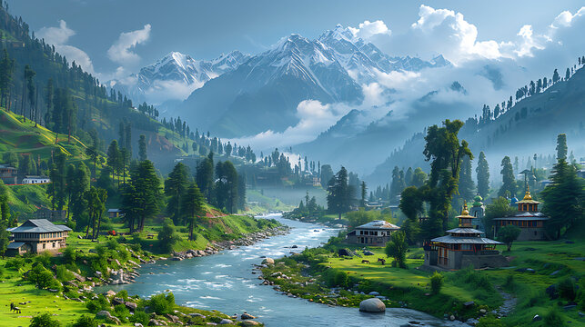
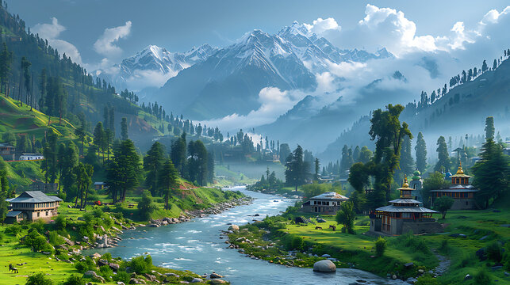
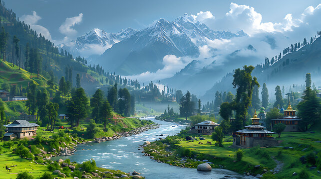

Image Gallery
 

The Paradise on Earth
Kashmir, often called the "Crown of India," boasts a rich and storied history. It has been a cradle of learning, culture, and spirituality for centuries. Ancient texts, including the Mahabharata, reference Kashmir, and it was once a center of Hinduism and Buddhism.
The region later saw the spread of Islam in the 14th century and became a melting pot of different religions and traditions. During the Mughal era, Kashmir earned the title of "Paradise on Earth" for its unmatched beauty.
Kashmir is renowned for its stunning landscapes, often likened to paradise. Key attractions include:
Kashmir's culture is a harmonious blend of Hindu, Buddhist, and Islamic traditions. Notable cultural aspects include:
